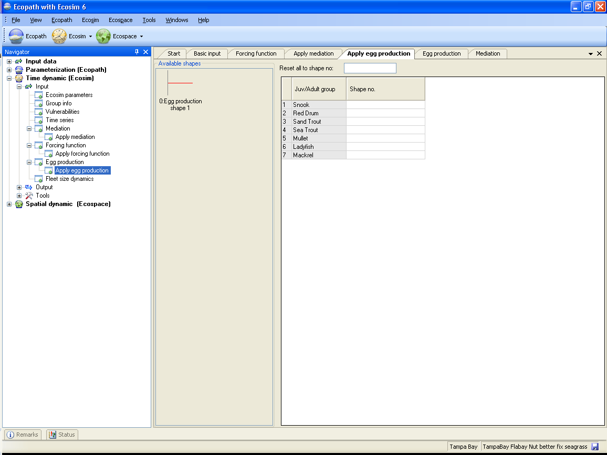

Egg production forcing can only be applied to multi-stanza model groups, whose population dynamics are represented using an age-structured model that explicitly includes a function for fecundity, based on average weight of the adults. It is assumed that a seasonally variable factor (or a set of factors) causes the number of egg/larvae that would be produced, given the adult biomass, to vary as a function of the month. Alternatively, this factor can be interpreted as seasonally modulating the mortality of the eggs/larvae, independently of their density. See also the introductory material on Representation of multi-stanza life histories in Ecopath, Ecosim and Ecospace.
Before using the Apply egg production form, you must first define at least one egg production function following the instructions for using the Egg production form. The egg production forcing function must then be applied in Ecosim, using this form.
Available egg production shapes are shown in the left-hand panel on the Egg production form. To apply egg forcing to a group, simply select the number of the desired egg production shape from the drop-down menu in the cell next to the name of the appropriate multi-stanza group. Alternatively, apply the same shape to all groups by typing the shape number int the Reset all to shape no window at the top of the form.

Figure 8.23